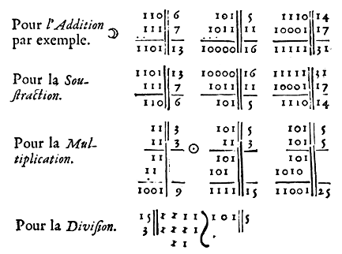

Binary numbers are a base 2 numeral system.
A binary number is a number expressed in the base-2 numeral system, which uses only two symbols: 0 and 1. Each digit is referred to as a bit. Because of its straightforward implementation in digital electronic circuitry using logic gates, the binary system is used by almost all modern computers and computer-based devices.
- Bit: The smallest unit in computers. It is either a 1 or a 0.
- Nibble: Half a byte, or 4 bits.
- Byte: 8 bits together form one byte, a number from 0 to 255. Bits in a byte are numbered starting from the right at 0.
- Short: Two bytes put together are 16 bits, forming a number from 0 to 65535. The low byte is the rightmost eight bits.
- Big Endian: Stores data big-end first. When looking at multiple bytes, the first byte (lowest address) is the biggest.
- Little Endian: Stores data little-end first. When looking at multiple bytes, the first byte is smallest.
Conversion
Break down the binary value in chunks of 4, multiply each 1 by its equivalent value, either 8, 4, 2 or 1. Add the resulting numbers together to get the result. For example, the value 1100, or (8*1 + 4*1), is equal to C(decimal 12).
1101 0101(D5) | ||||||||
|---|---|---|---|---|---|---|---|---|
| 1 | 1 | 0 | 1 | 0 | 1 | 0 | 1 | Binary |
| 128 | 64 | 32 | 16 | 8 | 4 | 2 | 1 | Values |
| 128 | 64 | 16 | 4 | 1 | Result: 213 | |||
Binary Arithmetic
In the first column, divide the first number by 2 by removing the last bit, until 1 is reached. In the second column, multiply by 2 by adding an extra bit of 0. The answer is found by adding the numbers in the second column with odd numbers in the first column. A binary number ending with 1 is odd.
| 35 | 19 |
|---|---|
100011 | 10011 |
10001 | 100110 |
1000 | 1001100 |
100 | 10011000 |
10 | 100110000 |
1 | 1001100000 |
1010011001 |
This example multiplies 35 by 19, to arrive at a result of 665. The result 1010011001 can be deconstucted as:
10 1001 1001 = 1 + 8 + 16 + 128 + 512 = 665
Binary numbers can be multiplied and divided by multiples of 2, by rotating one bit left to multiply by 2, or one bit right to divide by 2.
| 22 | 0 | 0 | 0 | 1 | 0 | 1 | 1 | 0 | |
|---|---|---|---|---|---|---|---|---|---|
| 44 | ROL | 0 | 0 | 1 | 0 | 1 | 1 | 0 | 0 |
| 11 | ROR | 0 | 0 | 0 | 0 | 1 | 0 | 1 | 1 |
AND, or "both", sets individual bits to 0. AND is useful for masking bits, for example, to mask the high order bits of a value AND with $0F: $36 AND $0F = $06. ORA(OR), or "either one or both", sets individual bits to 1. OR is useful for setting a particular bit, for example, $80 OR $08 = $88. EOR(XOR), or "one or the other but not both", inverts individual bits.
| input | output | AND | ORA | EOR |
| 0 | 1 | 0 | 1 | 1 |
| 0 | 0 | 0 | 0 | 0 |
| 1 | 1 | 1 | 1 | 0 |
| 1 | 0 | 0 | 1 | 1 |
To activate the 1st, 2nd and 4th bits:
| 0 | 0 | 0 | 0 | 1 | 0 | 1 | 1 |
unsigned char num = 0; num |= (1 << 0); num |= (1 << 1); num |= (1 << 3);
To deactivate the 1st, 4th and 6th bits:
| 1 | 1 | 0 | 1 | 0 | 1 | 1 | 0 |
unsigned char num = 255; num &= ~(1 << 0); num &= ~(1 << 3); num &= ~(1 << 5);
To read value of bit:
(num >> bit) & 1;
If Bit 7 is not set (as in the first example) the representation of signed and unsigned numbers is the same. However, when Bit 7 is set, the number is always negative. For this reason Bit 7 is sometimes called the sign bit.
| Binary | Unsigned | Signed |
| 0010 0011 | 35 | 35 |
| 1010 0011 | 163 | -93 |
| 1111 1111 | 255 | -1 |
| 1000 0000 | 128 | -128 |
A fixed-point number is a number that has a fixed number of digits after the decimal point. If, for example, we use 8 bits to store a number with decimal points, we could decide to store it this way. The high and low nibbles have the same resolution.
| Integer Part | Decimal Points | |||||||
|---|---|---|---|---|---|---|---|---|
| 0 | 0 | 0 | 0 | 0 | 0 | 0 | 0 | 0.0 |
| 0 | 0 | 1 | 1 | 1 | 0 | 1 | 0 | 3.a |
| 0 | 1 | 0 | 0 | 0 | 1 | 0 | 1 | 4.5 |
To turn a regular integer into fixed point, shift left by the number of fractional bits(width << bits), and to turn a fixed point into integer, shift right by the number of fractional bits(width >> bits).
To multiply, you do the multiply, and then you shift right by the number of fractional bits.
(3.8 * 2.0) >> 8
To divide, you first shift the numerator left by the number of fractional bits, then you do the division.
(3.8 << 8) / 2.0
incoming nibble dice ternary solresol noton fractran vga uxn devlog